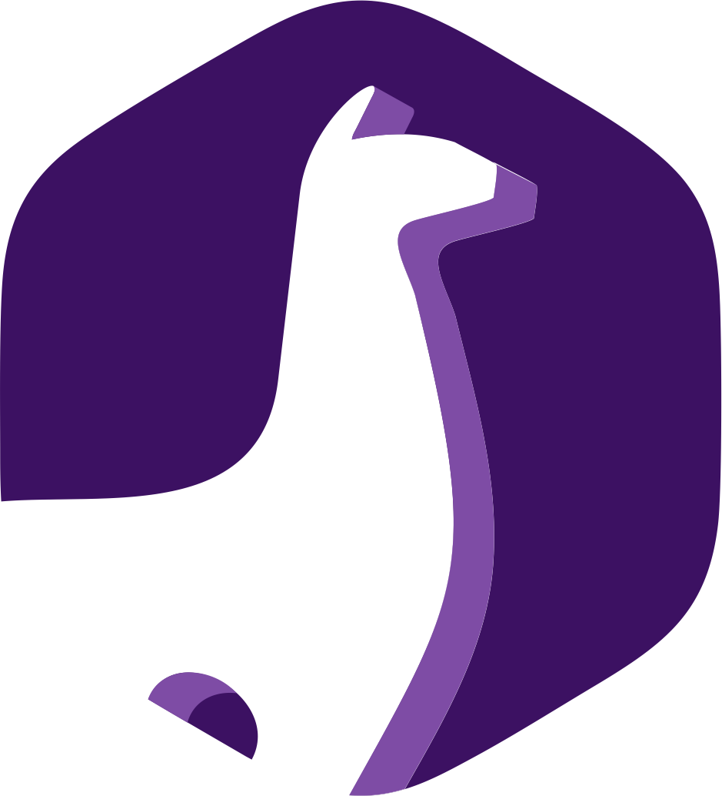

Composed view — all 4 CTA touchpoints, real spacing
Real content-band padding (72px/section) and 1280px content width, same as production. Each CTA
touchpoint is flagged with a small pill so they're easy to spot while scrolling: the hero's
Sumate, the Contacto card's WhatsApp/Instagram/Maps links, the closing band's Sumate, and the
mobile-only sticky Sumate bar (toggle 📱 below — same 480px threshold as the real
`.pk-about-cta-bar` media query). Photo rail and the live Maps embed are simplified placeholders;
their own motion/behavior was already validated in sketches 046/048 and isn't the point here.
Club de juegos de mesa · Jujuy
Conectá jugando
Nos juntamos todos los sábados a jugar. Venís, te sentás, alguien te explica.
↓ scrolleá para ver el resto de la página ↓
Photo rail (5 fotos, autoplay — validado en sketch 046, no reproducido acá)
Qué hacemos
Organizamos juntadas semanales de juegos de mesa modernos, pensadas para gente que recién empieza tanto como para quienes ya juegan hace años. Mirá también Juntadas.
Nuestra historia
Todo empezó en abril de 2021. Más de cinco años después nos sigue emocionando lo mismo: una mesa alcanza para que dos extraños se pongan de acuerdo, se rían y quieran volver a jugar.
Lo que todos preguntan
- ¿Cuándo y dónde?
- Todos los sábados desde las 16 hs, en el Club de Emprendedores, San Salvador de Jujuy.
- ¿Cuánto cuesta?
- Reservá tu lugar por $5.000. ¿Venís de sorpresa? Son $7.000 — pero siempre hay lugar para vos.
- ¿Tengo que saber jugar?
- No. La mayoría de los juegos se aprenden en diez minutos y siempre hay alguien para explicarte.
- ¿Puedo ir solo?
- Sí, mucha gente viene sola. Te sumamos a una mesa apenas llegás.
Juntadas
Nos juntamos los sábados en el Club de Emprendedores, San Salvador de Jujuy. Los juegos los llevamos nosotros; vos traé las ganas.
CTA 3 · Cierre
Nos vemos el sábado
Pukllay Club · San Salvador de Jujuy, Argentina · Instagram

PUKLLAY CLUB